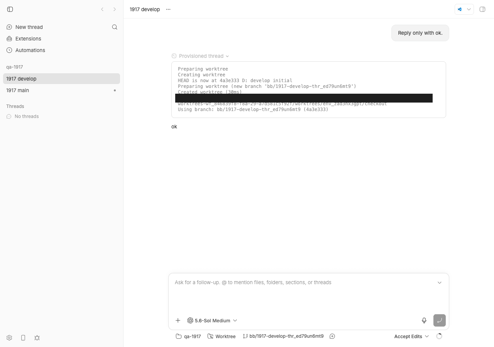
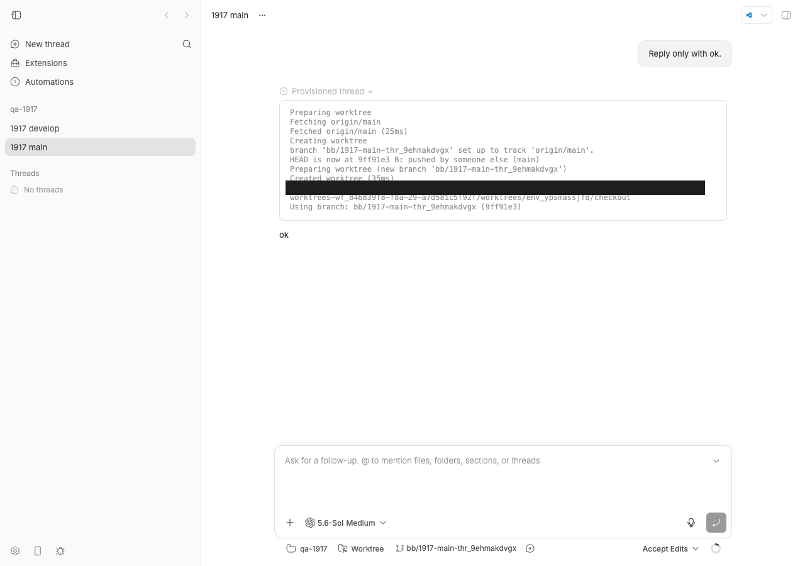

#1917 · spawn --base-branch <name> resolves the stale local ref; only remote-prefixed names are fetched
Verdict: PARTIALLY REPRODUCED — the behaviour in the issue's title (--base-branch <name> for any plain name) still reproduces at base for every name that is not the checkout's default branch (e.g. --base-branch develop lands on the stale local ref, no fetch, no warning). The one concrete scenario the reporter ran, --base-branch main (the default branch), is ALREADY FIXED by PR #2152 (merge 52083aa55, 2026-08-21, ancestor of base 494f66526), which closed the duplicate target #1770 and explicitly scoped out non-default names. · Root-cause confidence: high
1. TL;DR
When you run bb thread spawn --new-environment worktree --base-branch <name>, bb creates a git worktree starting from <name>. The host daemon's createWorktree() only runs git fetch when the name is remote-qualified (origin/main); a bare name goes verbatim to git worktree add, which resolves the host's local refs/heads/<name>. On a machine that fetches but never pulls, that local ref can be arbitrarily behind the remote, and the spawned agent silently starts on old code.
This issue was filed on 2026-08-19 against that behaviour. Two days later PR #2152 (for the duplicate-target #1770) added a server-side policy: when the named branch equals the checkout's default branch, the server calls host.list_branches (which fetches), compares local vs origin, and rewrites the base to origin/<default> when local is equal or behind. I confirmed on base 494f66526 that --base-branch main now lands on the origin tip and the transcript shows Fetching origin/main. The daemon code the issue points at is unchanged, so --base-branch develop (non-default) still lands on the stale local commit with no fetch step. The PR author documented this as a known residual in docs/worktrees.md.
2. Claims vs findings
| Claim from the issue | Status | Evidence |
|---|---|---|
createWorktree() calls fetchRemoteBaseBranch() only when baseBranch contains a remote prefix, then passes the bare name to git worktree add. | Verified | resolveRemoteBaseBranch returns null for names without / (provisioning.ts:240); fetchRemoteBaseBranch returns early (285); gitArgs uses the bare name (388–395). Daemon-level unit test below: no Fetching step for main or develop. |
A bare main resolves against the host's refs/heads/main, which can be far behind. | Verified at the daemon; Refuted end-to-end at base | Daemon test: worktree HEAD = local main (cea9901) not origin (e97ff2a). But the live spawn on base 494f66526 landed on origin/main (9ff91e3) because the server rewrote the spec (PR #2152). Issue was filed before that merge. |
The existing test fetches remote base branches before creating worktrees covers only origin/main; bare-name path has no coverage. | Verified (daemon); partially stale | provisioning.test.ts:204 uses baseBranch: "origin/main". Since #2152, apps/server/test/public/public-threads.named-base-branch.test.ts covers bare main at the server layer (11/11 pass at base). No test anywhere asserts a fetch for a bare non-default name; the existing server test for release/2026-05 asserts the opposite (spec unchanged). |
| Silent: spawn reports success; nothing indicates the base was stale. | Verified (for non-default names) | --base-branch develop spawn: exit 0, bb thread show reports baseBranch: "develop", transcript has no fetch step, worktree HEAD is 1 behind origin/develop. No warning anywhere. |
| Recurring on every spawn until someone refreshes the local ref by hand. | Verified (mechanism) | Nothing in the daemon path updates refs/heads/<name>; host.list_branches only refreshes remote-tracking refs (git fetch --all --prune --quiet, host-branches.ts:264 → fetchRemoteBranches). |
| "Measured on a working host: local main was 5 commits behind"; "~70 PRs behind, docs 11 releases stale". | Unverified | Reporter's anecdotes; not reproducible here. The mechanism is real; the numbers are whatever the host's local ref happened to be. |
Workaround: --base-branch origin/main takes the fetch path. | Verified | Code path (provisioning.ts:234–329) and the existing test at provisioning.test.ts:204. |
Suggested resolution (1): resolve <branch> against origin/<branch> when a remote-tracking ref exists. | Partially implemented | #2152 implements this only when <branch> is the default branch (resolveManagedNamedBaseBranchSpec returns the spec unchanged otherwise). The issue asks for it for any branch. |
3. Environment
- bb source at
494f66526913557ab076e048218236f0a6610927(main, 2026-08-24), package version 0.39.0.origin/mainat investigation time:b735da19e; no commits after base touchpackages/host-workspace/src/provisioning.ts,git.ts,apps/server/src/services/projects/worktree-base-branch.ts,apps/server/src/services/threads/thread-create.ts,apps/host-daemon/src/command-handlers/host-branches.ts, orpackages/host-daemon-contract/src. - macOS 26.5.2 (Darwin 25.5.0, Apple Silicon), Node v22.23.1, git 2.50.1 (Apple Git-155), codex-cli 0.149.1.
- Own dev instance from
scripts/bb-dev-app current(revised run): Apphttp://localhost:14461, Serverhttp://localhost:22461, Host daemon127.0.0.1:30461, data dir~/.bb-dev/bb-machines-HOST.getbb.app-checkouts-bb-.claude-worktrees-wf_846839f8-f8a-29-a7d581c5f92f(deleted after the run). Host idhost_u3tk78vmxr, projectproj_igv9vj9edp, threadsthr_9ehmakdvgx(main) andthr_ed79un6mt9(develop). These ids are instance-specific; the scripts below derive them instead of hardcoding them. - Provider for the live spawns: codex, prompt "Reply only with ok." (two turns).
4. Minimal reproduction
4a. Daemon-level unit test (fails at base for both main and develop)
This exercises exactly the function the issue names, createWorktree() in packages/host-workspace/src/provisioning.ts, with a bare base name and a local ref one commit behind origin. It asserts the behaviour the issue asks for (a fetch step, worktree at the origin tip), so it fails on base. Both cases fail identically, which shows the daemon is unchanged; the main case is rescued one layer up by the server (4b).
- Save
1917/repro/issue-1917-bare-base-branch.test.tsaspackages/host-workspace/test/issue-1917-bare-base-branch.test.tsin a bb worktree at494f66526(afterpnpm install --frozen-lockfileandpnpm exec turbo run build). - Run it (or run
run-unit-tests.sh <worktree>, which does steps 1–2 plus the #2152 server tests):cd packages/host-workspace && pnpm exec vitest run test/issue-1917-bare-base-branch.test.ts
- Expected: 2 passed (a
Fetchingstep and worktree HEAD = origin tip). Actual (full output, colour codes stripped):[#1917 main] local=cea9901 origin=e97ff2a worktree=cea9901 steps=["Creating worktree","Created worktree","Using workspace: …/feature"] [#1917 develop] local=65823e3 origin=7ca0731 worktree=65823e3 steps=["Creating worktree","Created worktree","Using workspace: …/feature"] ❯ @bb/host-workspace test/issue-1917-bare-base-branch.test.ts (2 tests | 2 failed) 714ms × starts the worktree from origin/main when local main is behind × starts the worktree from origin/develop when local develop is behind AssertionError: expected false to be true // Object.is equality ❯ test/issue-1917-bare-base-branch.test.ts:106:59 106| expect(steps.some((s) => s.startsWith("Fetching"))).toBe(true); Tests 2 failed (2)The worktree HEAD equals the local ref (cea9901 / 65823e3), not origin, and there is no fetch step in the transcript.
// packages/host-workspace/test/issue-1917-bare-base-branch.test.ts (excerpt; full file linked above)
for (const branch of ["main", "develop"]) {
describe(`createWorktree with bare --base-branch ${branch} (#1917)`, () => {
it(`starts the worktree from origin/${branch} when local ${branch} is behind`, async () => {
const { repoPath, remotePath } = await initRemoteBackedRepo(branch);
const remoteHead = await pushRemoteCommit(remotePath, branch);
// host fetches but never pulls: origin/<branch> fresh, refs/heads/<branch> 1 behind
await runGit(["fetch", "origin"], { cwd: repoPath });
…
await createWorktree({ sourcePath: repoPath, targetPath, branchName: "feature",
baseBranch: branch, timeoutMs: 60_000,
onProgress: (e) => { if (e.type === "step") steps.push(e.text); } });
const worktreeHead = (await runGit(["rev-parse", "HEAD"], { cwd: targetPath })).stdout.trim();
expect(steps.some((s) => s.startsWith("Fetching"))).toBe(true); // FAILS at base
expect(worktreeHead).toBe(remoteHead); // would also fail
});
});
}
4b. End-to-end through the CLI on a running instance
Every command below takes the path of your bb worktree ($WT, checked out at 494f66526, built, with scripts/bb-dev-app current running) and derives the host id, project id, environment ids and data dir from the instance itself; nothing instance-specific is hardcoded. The ids shown in the output are from my run and will differ on yours.
- Build the scratch repos (bare origin at
/tmp/bb-1917/origin.git, a checkout at/tmp/bb-1917/checkoutwhose localmainanddevelopare each one commit behind origin, remote-tracking refs fresh):setup-scratch-repos.sh(output)bash setup-scratch-repos.sh --- checkout state: local is behind origin on both branches main local=71100a4 origin=9ff91e3 develop local=4a3e333 origin=099916e * 9ff91e3 B: pushed by someone else (main) | * 099916e E: pushed by someone else (develop) | * 4a3e333 D: develop initial |/ * 71100a4 A: initial
- Register the checkout as a project on your instance.
e2e-create-project.shrunseval "$(scripts/bb-dev-app env)", reads the host id frompnpm bb:dev machine list --json(machine-list.json), POSTs the project (create-project.json) and prints the project id to use next:bash e2e-create-project.sh "$WT" BB_SERVER_URL=http://localhost:22461 HOST=host_u3tk78vmxr PROJ=proj_igv9vj9edp # the POST it sends, with $HOST substituted: curl -s -X POST $BB_SERVER_URL/api/v1/projects -H 'content-type: application/json' \ -d '{"name":"qa-1917","source":{"type":"local_path","path":"/tmp/bb-1917/checkout","hostId":"'$HOST'"}}' - Spawn once with the default branch name and once with a non-default name, using the project id from step 2.
e2e-spawn.shruns the two commands below and saves the responses (spawn-main.json,spawn-develop.json):bash e2e-spawn.sh "$WT" proj_igv9vj9edp spawn main exit=0 thread=thr_9ehmakdvgx status=starting spawn develop exit=0 thread=thr_ed79un6mt9 status=starting # the commands it runs: pnpm bb:dev thread spawn --project $PROJ --new-environment worktree --base-branch main \ --provider codex --permission-mode accept-edits --title "1917 main" --prompt "Reply only with ok." --json pnpm bb:dev thread spawn --project $PROJ --new-environment worktree --base-branch develop \ --provider codex --permission-mode accept-edits --title "1917 develop" --prompt "Reply only with ok." --json
Both exit 0 and report"status": "starting"; theidfield of each response is the thread id for step 4. - Inspect where each worktree landed, passing the two thread ids from step 3.
inspect-worktrees.shwaits for provisioning, reads.thread.environmentIdfrompnpm bb:dev thread show <id> --json(saved asthread-show-main.json/thread-show-develop.json), takes the data dir fromscripts/bb-dev-app status, compares the worktree HEAD with the checkout's local and origin refs, and dumps the provisioning transcript from the events table (raw). Output of my run (inspect-worktrees.out):bash inspect-worktrees.sh "$WT" thr_9ehmakdvgx thr_ed79un6mt9 data dir = /Users/USER/.bb-dev/bb-machines-HOST.getbb.app-checkouts-bb-.claude-worktrees-wf_846839f8-f8a-29-a7d581c5f92f === --base-branch main (thr_9ehmakdvgx, env_ypsmassjfd) thread show: baseBranch="origin/main" defaultBranch="main" branchName=bb/1917-main-thr_9ehmakdvgx checkout local main = 71100a4 checkout origin/main = 9ff91e3 worktree HEAD = 9ff91e3 (B: pushed by someone else (main)) files in worktree = file.txt remote.txt RESULT: worktree is at origin/main tip (fresh) <-- fixed by #2152 === --base-branch develop (thr_ed79un6mt9, env_zad3hx3gpt) thread show: baseBranch="develop" defaultBranch="main" branchName=bb/1917-develop-thr_ed79un6mt9 checkout local develop = 4a3e333 checkout origin/develop = 099916e worktree HEAD = 4a3e333 (D: develop initial) files in worktree = dev.txt file.txt RESULT: worktree is BEHIND origin/develop (stale local ref used) <-- still the bug === provisioning transcript (events table) thr_9ehmakdvgx step workspace-started Preparing worktree thr_9ehmakdvgx step git-fetch-started Fetching origin/main thr_9ehmakdvgx step git-fetch-completed Fetched origin/main thr_9ehmakdvgx step git-worktree-started Creating worktree thr_9ehmakdvgx output git-worktree-output-1 branch 'bb/1917-main-thr_9ehmakdvgx' set up to track 'origin/main'. thr_9ehmakdvgx output git-worktree-output-2 HEAD is now at 9ff91e3 B: pushed by someone else (main) thr_9ehmakdvgx output git-worktree-output-3 Preparing worktree (new branch 'bb/1917-main-thr_9ehmakdvgx') thr_9ehmakdvgx step git-worktree-completed Created worktree thr_9ehmakdvgx step workspace-branch Using branch: bb/1917-main-thr_9ehmakdvgx (9ff91e3) thr_ed79un6mt9 step workspace-started Preparing worktree thr_ed79un6mt9 step git-worktree-started Creating worktree thr_ed79un6mt9 output git-worktree-output-1 HEAD is now at 4a3e333 D: develop initial thr_ed79un6mt9 output git-worktree-output-2 Preparing worktree (new branch 'bb/1917-develop-thr_ed79un6mt9') thr_ed79un6mt9 step git-worktree-completed Created worktree thr_ed79un6mt9 step workspace-branch Using branch: bb/1917-develop-thr_ed79un6mt9 (4a3e333)
Expected fordevelop: HEAD 099916e withremote-dev.txtand aFetching origin/developstep. Actual: HEAD 4a3e333, the stale local ref,remote-dev.txtabsent, no fetch step. The server rewrote themainspec toorigin/main(the #2152 policy) and leftdevelopverbatim.

--base-branch develop on base 494f66526 (thread thr_ed79un6mt9): the "Provisioned thread" transcript has no fetch step and reports HEAD is now at 4a3e333 D: develop initial, which is the stale local commit (origin/develop is 099916e). Nothing on the page says the base is behind.
--base-branch main on the same base (thread thr_9ehmakdvgx): transcript shows Fetching origin/main, Fetched origin/main, and HEAD is now at 9ff91e3 B: pushed by someone else (main), the origin tip. This is the #2152 fix in action.Repro files: 1917/repro/
5. Root cause
Daemon layer (unchanged since the issue; the mechanism the issue describes). resolveRemoteBaseBranch returns null for any base without a /, so fetchRemoteBaseBranch is a no-op, and createWorktree runs git worktree add -B <branch> <target> <bareName>:
async function resolveRemoteBaseBranch(sourcePath, baseBranch, …) {
if (!baseBranch.includes("/")) {
return null; // bare name: no remote, no fetch
}
…
}
…
await fetchRemoteBaseBranch({ sourcePath: args.sourcePath, baseBranch, … }); // returns early for bare names
const gitArgs = ["worktree", "add", "-B", args.branchName, args.targetPath, baseBranch];
Git resolves a bare develop via refs/heads/develop first. That ref is only moved by a checkout/pull on the host; a fetch updates refs/remotes/origin/develop only. So the worktree starts from whatever the host last pulled, and the transcript just echoes HEAD is now at <stale sha> with no comparison to origin.
Server layer (where #2152 fixed the reported case). resolveManagedBaseBranchForCreate calls host.list_branches (which runs a throttled git fetch --all --prune --quiet on the daemon via fetchRemoteBranches, host-branches.ts:264) and then routes named specs through resolveManagedNamedBaseBranchSpec:
export function resolveManagedNamedBaseBranchSpec(spec, checkout) {
if (spec.name !== checkout.defaultBranch) {
return spec; // non-default plain name: untouched -> stale local ref downstream
}
const resolved = resolveDefaultWorktreeBaseBranch(checkout); // origin/<default> when equal or local-behind
return resolved && resolved !== spec.name ? { kind: "named", name: resolved } : spec;
}
So the fix is a policy rewrite main → origin/main that only fires for the default branch, because host.list_branches only reports a local-vs-origin relation (defaultBranchRelation) for the default branch. For any other name the server has no relation data, returns the spec verbatim, and the daemon path above does the rest. docs/worktrees.md at base says so explicitly (lines 45–47): "Any other plain name starts from that local branch as it is; pass origin/<name> to fetch and start from the remote branch."
Why it is silent. No layer compares the chosen start point against its upstream for non-default names. The transcript prints git's own HEAD is now at … line, which is correct for what git was asked to do. bb thread show stores the spec the server settled on ("develop"), which looks like exactly what the user typed.
Deeper issue. The "resolve against origin when safe" policy now lives in two asymmetrical places: the server rewrites only the default branch name (with an ahead/diverged guard), while the daemon fetches only remote-qualified names (with no guard, since origin/x is unambiguous). Any plain name that is not the default falls through both.
6. Proposed fix (first principles)
Generalise the server policy that #2152 added from "the default branch" to "any named branch that has an origin/<name> remote-tracking ref", keeping the same guard (rewrite only when local is equal or behind; keep local when ahead, diverged, or unknown). The server cannot do that today because the daemon only reports the relation for the default branch, so:
- Daemon (raw data): in
listHostBranches(apps/host-daemon/src/command-handlers/host-branches.ts), whencommand.selectedBranchis set, computeselectedBranchRelationforrefs/heads/<selected>vsrefs/remotes/origin/<selected>, plusselectedBranchOrigin: "origin/<selected>" | null. The comparison logic already exists asreadDefaultBranchRelation(cwd, localDefaultBranch, originDefaultBranch)inpackages/host-workspace/src/git.ts, but it is module-private (noexport) and named/typed for the default branch, so export and generalise it toreadBranchRelation(cwd, localBranch, originBranch)(its body is already branch-agnostic: tworev-parseplus up to twomerge-base --is-ancestor). The relation enum is the domain typeDefaultBranchRelation(equal | local-behind | local-ahead | diverged | unknown) inpackages/domain/src/git-checkout.ts; reuse it. Thehost.list_branchesresult schema isprojectSourceCheckoutSchemafrom that same domain file (referenced asresultSchemainhost-daemon-contract/src/commands.ts:1894), so the two new fields go onprojectSourceCheckoutSchema, andHOST_DAEMON_PROTOCOL_VERSIONmust be bumped (164 → 165 inpackages/host-daemon-contract/src/protocol.ts:303), since the result shape changes and old daemons would omit the fields. - Server (policy): in
resolveManagedBaseBranchForCreatepassselectedBranch: args.baseBranch.namefor named specs; inresolveManagedNamedBaseBranchSpecdrop thespec.name !== checkout.defaultBranchearly return and apply the equal/local-behind →origin/<name>rule usingselectedBranchRelation/selectedBranchOrigin(fall back to the default-branch fields when the name is the default, so existing tests keep passing). A name with no remote-tracking counterpart stays local (the issue's case 2). - Tests: extend
apps/server/test/public/public-threads.named-base-branch.test.tswith "namedrelease/2026-05withlocal-behind→origin/release/2026-05" and "named non-default with no origin → unchanged" (the existing "release/2026-05unchanged" case must be updated: it currently asserts the residual behaviour). Add a daemon test for the new result fields. The daemon test in 4a is not the right regression test, because the server is the layer that owns this policy; keepcreateWorktreeas the dumb primitive it is. - Docs: update the sentence in
docs/worktrees.md(lines 45–47) and the--base-branchhelp text inapps/cli/src/commands/thread/spawn.ts(lines 181–183: "naming the default branch fetches and prefers origin the same way") that currently promise local-only behaviour for non-default names.
What could go wrong: a remote named something other than origin (the default-branch path already assumes origin; keep that assumption and document it). A checkout with many remotes where origin/<name> is absent should stay local, not error. The extra relation computation is two rev-parse and up to two merge-base --is-ancestor calls, which is negligible next to the fetch that already runs. The alternative of doing the rewrite inside the daemon's createWorktree would be simpler but puts product policy in the daemon, against the server/daemon split in AGENTS.md, and would diverge from how the default-branch case is already handled.
7. PR review
No open PRs are linked to #1917. The relevant merged PR is #2152 (for #1770), reviewed here only to establish that the reported case is fixed: it is server-only (no wire change, correctly no protocol bump), rewrites a named default-branch spec to origin/<default> when local is equal/behind, keeps local when ahead/diverged/unknown, and explicitly scopes out non-default names in its description and in docs/worktrees.md. Its tests pass at base (11/11). Nothing in it is wrong; it is just narrower than what #1917 asks for.
8. Related issues
- #1770 — the duplicate target; same mechanism, closed as completed by #2152 on 2026-08-21. Its report: reports/issues/1770.html.
- PR #2152 — "Resolve a named default base branch against origin when spawning" (merged, in base).
- Original fetch-for-remote-qualified-names commit:
7d3a1a9de"Fetch remote base before creating worktree".
Recommendation for the issue: the duplicate label only covers the --base-branch main scenario. Either reopen #1770 or retitle this one to the residual ("plain non-default --base-branch <name> is not resolved against origin/<name>") so the remaining gap is tracked rather than closed as a duplicate of a fixed issue.
9. Appendix
Commands run (revised run, all from the bb worktree at 494f66526)
gh issue view 1917 --repo get-bb/bb --json … # body, labels (duplicate, cli, workspaces), no comments
gh issue view 1770 --repo get-bb/bb … # duplicate target, closed COMPLETED 2026-08-21
gh api repos/get-bb/bb/issues/1770/timeline # cross-ref PR 2152, merge 52083aa55
git merge-base --is-ancestor 52083aa55 494f66526 # -> IS ancestor (fix is in base)
git fetch origin main; git log 494f66526..origin/main -- packages/host-workspace/src/provisioning.ts … # empty (origin/main b735da19e)
git checkout 494f66526
bash /tmp/bb-reports/issues/1917/repro/install-and-build.sh "$WT" # pnpm install + turbo build, exit 0
bash /tmp/bb-reports/issues/1917/repro/run-unit-tests.sh "$WT" # daemon test 2 failed (bug); server tests 11 passed
scripts/bb-dev-app current # App :14461, Server :22461, Host daemon :30461
bash /tmp/bb-reports/issues/1917/repro/setup-scratch-repos.sh
bash /tmp/bb-reports/issues/1917/repro/e2e-create-project.sh "$WT" # host_u3tk78vmxr -> proj_igv9vj9edp
bash /tmp/bb-reports/issues/1917/repro/e2e-spawn.sh "$WT" proj_igv9vj9edp # thr_9ehmakdvgx (main), thr_ed79un6mt9 (develop)
bash /tmp/bb-reports/issues/1917/repro/inspect-worktrees.sh "$WT" thr_9ehmakdvgx thr_ed79un6mt9
doobie --headless < screenshot-{develop,main}.js # screenshots of /projects/proj_igv9vj9edp/threads/<id> with "Provisioned thread" expanded
pnpm dev:stop; doobie stop; rm -rf <data dir> /tmp/bb-1917
Provisioning transcript entries (from the events table, revised run)
thr_9ehmakdvgx (--base-branch main)
step git-fetch-started Fetching origin/main
step git-fetch-completed Fetched origin/main
step git-worktree-started Creating worktree
output branch 'bb/1917-main-thr_9ehmakdvgx' set up to track 'origin/main'.
output HEAD is now at 9ff91e3 B: pushed by someone else (main)
step git-worktree-completed Created worktree
step workspace-branch Using branch: bb/1917-main-thr_9ehmakdvgx (9ff91e3)
thr_ed79un6mt9 (--base-branch develop)
step git-worktree-started Creating worktree
output HEAD is now at 4a3e333 D: develop initial
output Preparing worktree (new branch 'bb/1917-develop-thr_ed79un6mt9')
step git-worktree-completed Created worktree
step workspace-branch Using branch: bb/1917-develop-thr_ed79un6mt9 (4a3e333)
Artifacts
issue-1917-bare-base-branch.test.ts— daemon-level failing test;output;run-unit-tests.shruns it plus the server testsserver-pr2152-tests.txt— #2152's tests passing at baseinstall-and-build.sh,install.log,build.log,dev-app-start.logsetup-scratch-repos.sh,outpute2e-create-project.sh→machine-list.json,create-project.jsone2e-spawn.sh→spawn-main.json,spawn-develop.jsoninspect-worktrees.sh→inspect-worktrees.out,thread-show-main.json,thread-show-develop.json,provisioning-events.txtscreenshot-thread.js(template),screenshot-develop.js,screenshot-main.js— doobie scripts for the two screenshots- Independent verifier's run (own instance, own scripts):
1917/verify/
Verification
An independent verifier followed the report in a fresh worktree at 494f66526 with its own dev instance (App :18328 / Server :26328 / daemon :34328). The daemon-level test failed exactly as shown (2 failed, AssertionError: expected false to be true on the Fetching step, for both main and develop); #2152's server tests passed 11/11; the end-to-end spawns reproduced the same split (--base-branch main → baseBranch "origin/main", worktree at the origin tip, Fetching origin/main in the transcript; --base-branch develop → baseBranch "develop", worktree at the stale local commit, no fetch step, remote-dev.txt absent); every code claim (provisioning.ts lines, resolveManagedNamedBaseBranchSpec early return, git fetch --all --prune --quiet, protocol version 164, docs and help text wording, #2152 merge and scope) checked out; both screenshots matched their captions. Its artifacts are in 1917/verify/.
Findings and what changed in this revision:
- Major —
inspect-worktrees.shhardcoded the author's environment ids and could not run on another instance. Rewritten: it now takes the worktree path and the two thread ids, reads.thread.environmentIdfrombb thread show --jsonand the data dir fromscripts/bb-dev-app status, and also dumps the provisioning transcript. The whole 4b flow was re-run from scratch on a new instance (new host/project/thread/env ids, new SHAs) with the rewritten scripts, and every output and both screenshots in this report are from that re-run. - Minor — host id and project id were pasted into commands without saying where they come from. Added
e2e-create-project.sh(derives the host id frombb machine list --jsonand prints the project id) ande2e-spawn.sh(takes the project id, prints the thread ids); the 4b text now states each id's source and thebb thread showstep precedes the worktree inspection. - Minor — headline verdict. Changed from ALREADY FIXED to PARTIALLY REPRODUCED with the residual stated first, since the issue's title and suggested resolution cover any plain name and the non-default case still reproduces at base; the reported
--base-branch mainscenario remains marked as already fixed by #2152. - Minor — proposed fix overstated reuse of
readDefaultBranchRelation. Corrected: it is module-private and default-branch-typed, so it must be exported and generalised; the relation enum and thehost.list_branchesresult schema (projectSourceCheckoutSchema) live inpackages/domain/src/git-checkout.ts, not in the host-daemon-contract package, with permalinks added.